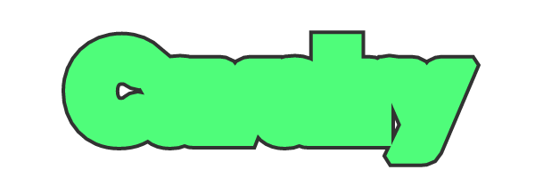

展平图形图层
简介
Flatten Shape Layers 可作为变形器用于包含子网格的图形，将其内部层级展平为单个路径或单个图层。
界面
Mode：
- Single Path：将所有几何体展平为一个路径。注意：此模式会移除所有材质。
- Single Layer（保留材质）：将子网格层级展平为单个图层。
Maintain Transforms：在某些情况下，应用 Flatten Shape Layers 时可能丢失变换信息——勾选此属性可保留它们。例如，对包含未定位于 0,0 的 Duplicator 的预合成应用 Flatten Shape Layers 时就会出现这种情况。
信息：
使用 Flatten Shape Layers 时，操作顺序非常重要。
示例：
- 创建一个 文本图形。
- 单击 Text Shape 的 Deformers 属性上的
+，选择 路径偏移 以创建并连接一个。- 在 Path Offset 上设置 Offset 值。
- 在 Text Shape 上，加载其 Stroke 标签页并勾选 Stroke。
结果应大致如下：
- 单击 Text Shape 的 Deformers 属性上的
+，选择 Flatten Shape Layers 以创建并连接一个。结果应大致如下：
